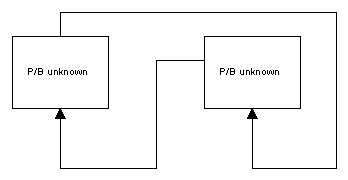
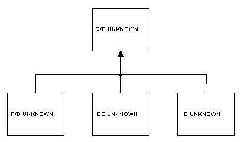

Once you have entered sufficient input parameters you can proceed to estimate the parameters of Ecopath by selecting Basic estimates under the Parameterization node in the Navigator window. The missing parameters will be estimated so that mass balance is achieved. Before parameterizing a model make sure you are also.
Important note: If Ecopath has NOT been balanced already since opening or making changes to the input parameters, selecting any of the forms under the Parameterization node in the Navigator window will cause Ecopath to attempt to balance the model. Note also that you will not be able to balance your model if the sum of the Diet composition for each predator does not sum to 1. Return to the Diet composition form and fix the problem if this is the case.
Below are some important notes to help you during model parameterization (balancing). Before commencing balancing, we recommend you first read Notes on parameterizing an Ecopath model and are familiar with the introductory material on Ecopath parameterization (Mortality for a prey is consumption for a predator, The energy balance of a box and On the need for input parameters).
Problems in parameter estimation will be shown in the Status panel. Two types of message may be displayed in the Status panel while you are balancing your model:
Information messages []. Information messages provide feedback on regular events in EwE. Information events are confirmations of things that went well. Examples are opening the model; successful edits; and successful balancing (i.e., parameterization) of the model. Clicking and holding the mouse button over each message highlights the relevant cells in red [ ].
Warning messages []. Warnings occur when EwE was not able to complete an action and requires the user to fix a problem, usually with the input data. For example, one of the most important of these is when parameterization fails (i..e., the model failed to balance). When this occurs, you will get the message “Your model is NOT balanced! Computed Ecotrophic Efficiencies (EE) invalid for one or more group(s).” Clicking on the “+” icon next to this message expands the message to show which groups are causing the problem. Clicking and holding the mouse button over each warning message highlights the problem cells in red [ ]*.
An exhaustive set of guidelines for how a model should be balanced cannot be given. However, if it existed, such a set would include the following general guidelines:
Consumption = production + respiration + unassimilated food, or Q = P + R + U. Expressing this relative to consumption we have: P/Q + R/Q + U/Q = 1. Of these P/Q is entered as GE or the gross food conversion efficiency and U/Q us the proportion of food that is not assimilated. If GE + U/Q exceeds unity then R/Q and hence the respiration, R, has to be negative. You will need to reduce the production/consumption (GE) ratio by lowering the production/biomass (P/B) ratio or increasing the consumption/biomass (Q/B) ratio, and/or reduce the proportion of unassimilated food;
See Boxes 1-3 below for notes about some common causes of problems during balancing.
Box 1. Problem: Loops
In cases where P/B is to be estimated for groups that feed on each others (cycles) the program may first estimate a P/B for one groups based on the consumption by the other groups. Subsequently it may estimate the P/B for the second group based on the consumption by the first, and then it may continue with the P/B for the first again, and so on in a loop. The result may be completely unrealistic parameter estimates.
It is necessary to break such loops, e.g., by entering the P/B for one of the groups. If all ecotrophic efficiencies are low it indicates that the trophic transfer efficiencies are low. This may be OK for a system with high production and low abundance of organisms. It may however also indicate that the estimates of the biomasses in the system are too low.

Box 2. Problem: Cannibalism (0-order cycles)
Groups where 0-order cycles (cannibalism) are important should be broken into two or more groups. Such cases occur, for example, when a predatory fish feeds on fish of the same species or grouping. The prey fish will, however, be smaller fish, and often the P/B value for the group is based on the recruited part of the population only, and thus does not cover the dynamics of the juveniles, (which generally have much higher P/B values than the recruited part of the population). The solution may be to split the group in an adult and a juvenile fish group. This will also be an advantage for subsequent Ecosim simulations.
Remember that the gross food conversion efficiency or GE is the P/Q ratio. Typically this ratio is in the range of 10-30%. If the proportion of the 0-order cycle is in the same range there may not be any production left over for other purposes (predation and export). As a guideline if a 0-order cycle includes more than say 5% of the diet composition it is necessary to consider if it would be better to split the group in two.
Box 3. Problem: Estimation of predator consumption and prey production
In this example it is assumed that the consumption is unknown for the predator and the (used part of the) production, (i.e., the B, P/B or EE) unknown for all of the prey groups. In this case, it will not be possible for the program to calculate meaningful parameters and it will (probably) resort to the trivial solution: set the Q/B for the predator to zero, and see what can be estimated for the other groups. The problem is easily identified from an examination of the estimated parameters and statistics. The solution may well be to either input a gross efficiency for the predator or one of the missing input parameters for one of the prey groups.
